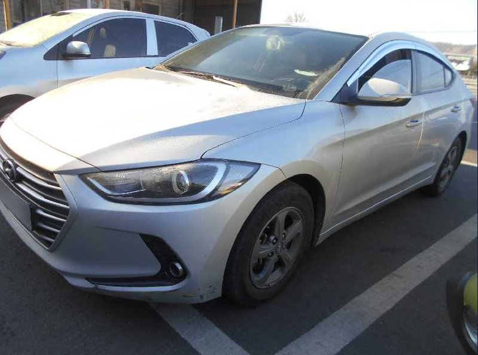
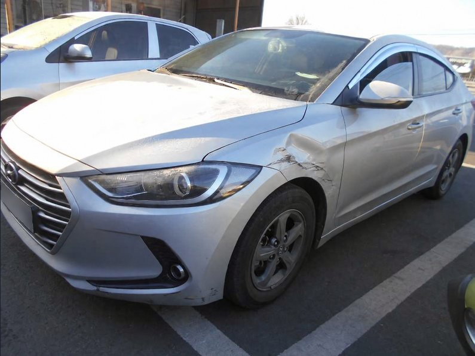
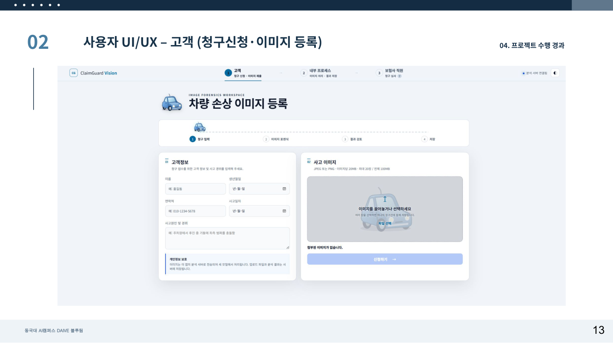
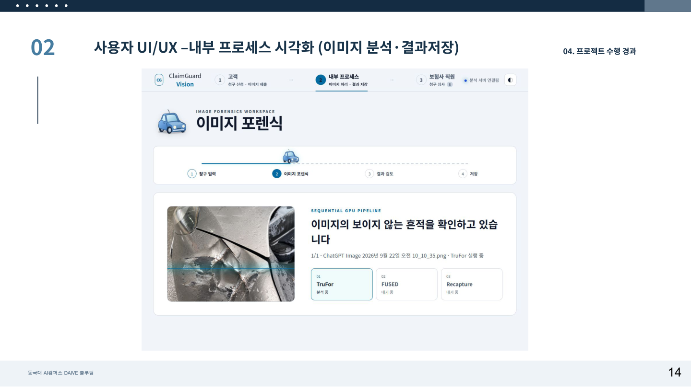
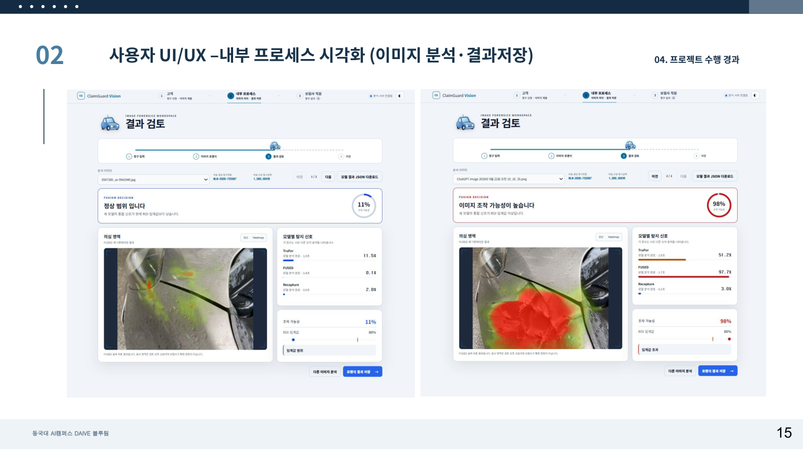
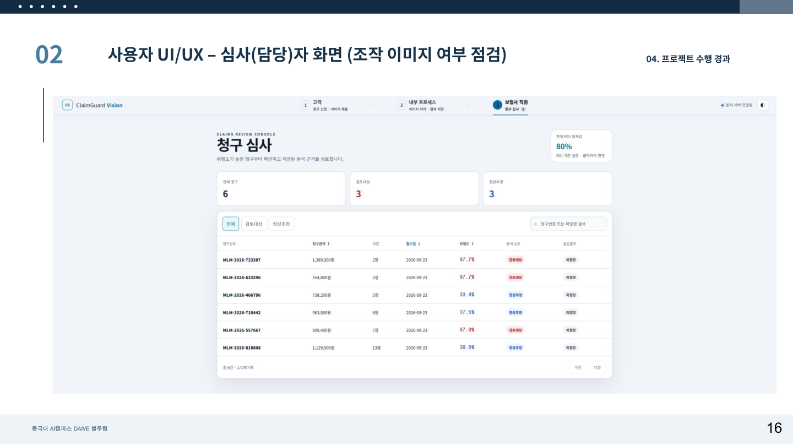
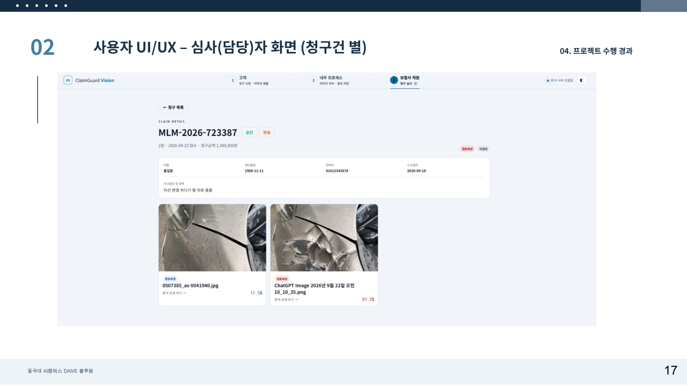
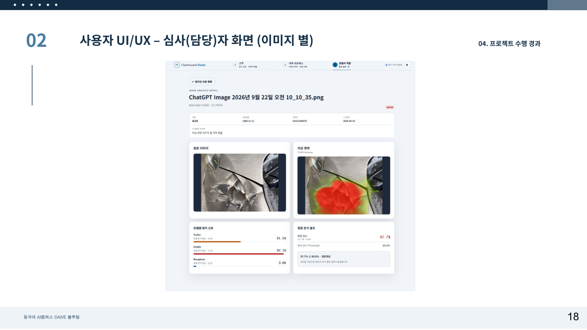

Image Forensics · Web Service · 2026
보험 청구로 들어온 차량 사고 사진을 서로 다른 조작을 보는 3개의 포렌식 모델로 분석하고, 조작이 의심되는 사진을 근거와 함께 골라 심사자가 추가 검토할 수 있게 돕는 웹입니다.
01 · Problem
사고 접수와 사진 제출은 모바일 · 웹 비대면으로 바뀌었고, 심사자는 사진만 보고 보험금을 판단합니다. 그런데 생성형 AI는 멀쩡한 차에 찌그러짐과 긁힘을 자연스럽게 그려 넣을 수 있습니다.


앞펜더의 찌그러짐은 생성형 AI로 새로 그려 넣은 것입니다. (프로젝트에서 직접 만든 예시, 실제 청구 사례 아님)
AI가 픽셀 · 질감 · 빛 반사까지 새로 만들어, 기존의 편집 흔적 확인이나 눈으로 보는 검토만으로는 판별이 어렵습니다.
포토샵 합성 · 복제, AI 인페인팅, 모니터 화면을 다시 찍은 사진까지. 한 가지 탐지 모델로는 모든 경우를 잡지 못합니다.
2026년 6월 금융당국이 AI 기반 보험사기 방지 TF를 출범했지만, 원본 대조 조회체계는 법 개정이 필요해 시행까지 오래 걸리고 이미지 포렌식 적용은 아직 없습니다.
모델이 정확해도 "82%" 같은 숫자 하나만 보여 주면 왜 의심스러운지 알 수 없어, 실제 심사에 쓰이기 어렵습니다.
| 기존 방법 | 할 수 있는 것 | 부족한 점 |
|---|---|---|
| 심사자 육안 검토 | 사진 · 사고 경위 대조 | AI가 새로 그린 손상은 눈으로 구별하기 어려움 |
| 단일 포렌식 모델 | 특정 조작 유형 탐지 | 다른 유형(AI 생성, 화면 재촬영)은 놓침 |
| 원본 대조 조회체계 (검토 중) | 보험사 간 원본 사진 대조 | 관련 법 개정 필요, 시행까지 상당한 시간 소요 |
| ClaimGuard | 3종 모델로 조작 유형별 탐지 + 의심 영역 히트맵 · 모델별 점수 · 판정 근거를 함께 제시. AI는 검토 대상을 고를 뿐, 최종 판단은 심사자가 합니다. | |
02 · How it works
앞펜더에 AI로 손상을 그려 넣은 사진 한 장을 따라가 봅니다. My part 표시는 제가 맡은 단계입니다. (점수는 설명을 위한 예시입니다.)
고객이 사진을 올리면 형식 · 용량 · 장 수를 확인하고, 사진 방향(EXIF)을 바로잡아 모델 결과와 화면이 같은 기준을 보게 합니다.
포토샵 합성 · 복제 · 객체 삭제 같은 전통적 편집 흔적
생성형 AI가 새로 그려 넣은 영역 (인페인팅) + 의심 영역 히트맵
모니터 화면을 다시 찍은 사진 (모아레 패턴)
세 모델은 요구하는 Python · PyTorch 버전이 달라 각자 독립 환경의 프로세스로 실행되고, GPU 한 장을 나눠 쓰도록 TruFor → FUSED → Recapture 순서로 돌아갑니다.
세 결과가 약속한 형식인지, 실제 모델에서 나왔는지, 모두 끝났는지 확인한 뒤에만 가중 평균으로 통합합니다. (자세한 내용은 04 섹션)
통합 점수를 임계값과 비교해 사람 검토(HUMAN_REVIEW)와 자동 처리(AOS)로 나눕니다. 임계값은 검토비용과 놓친 조작의 손실을 따져 고릅니다.
심사자는 원본 ↔ 히트맵, 모델별 점수, 판정 문장을 보고 직접 승인 또는 반송을 결정합니다.
원칙: AI는 보험사기를 확정하지 않습니다. 추가로 확인할 사진을 근거와 함께 골라 줄 뿐이고, 원본 요청 · 현장 대조 같은 후속 조사와 최종 결정은 심사자가 합니다.
포토샵 등 전통적 편집 탐지
생성형 AI 인페인팅 탐지
화면 재촬영 탐지
03 · My Role
My part · 박하영
모델 파인튜닝은 팀원이 맡았고, 저는 모델 출력 이후 구간을 맡았습니다. 모델 출력의 최종 검증과 웹 프론트엔드 전체입니다.
model_io_schema.json)을 지키는지 확인팀 공동 시장조사 · AI Hub 데이터 활용 및 조작 이미지 생성 · 전체 시스템 설계 팀원 담당 TruFor · FUSED 파인튜닝, 모델 백엔드
04 · Model Output Verification
세 모델은 요구하는 라이브러리 버전이 달라 각자 독립 프로세스로 실행됩니다. 따라서 각 결과가 "약속한 형식인지, 진짜 모델에서 나왔는지"를 앱 쪽에서 반드시 검증해야 합니다.
모델명이 trufor / fused / recapture 중 요청한 모델과 일치하는지, score가 0~1 범위인지 확인. 어긋나면 결과를 받지 않습니다.
모델 실행이 실패하면 ELA · FFT 같은 대체 점수가 나올 수 있습니다. meta.is_official_model이 true가 아닌 결과는 거부해 가짜 점수가 "정상"으로 통과하는 것을 막았습니다.
한 모델이 실패해도 나머지 모델은 끝까지 실행하되, 통합 점수는 만들지 않고 INCOMPLETE → 화면에서 "판정 보류"로 표시합니다. 실패한 모델을 빼고 계산하면 위험도가 낮게 왜곡되기 때문입니다.
TruFor 0.35 + FUSED 0.50 + Recapture 0.15로 통합하고 임계값(기본 0.63)과 비교합니다. 사용한 임계값을 결과에 함께 저장해, 나중에 기준이 바뀌어도 당시 판정 근거를 재현할 수 있습니다.
화면의 히트맵은 FUSED가 정상 완료됐을 때 FUSED가 실제로 저장한 산출물에서만 가져옵니다. 실행 순서, 폴백 거부, 실패 시 점수 미생성, 임계값 기록 등을 단위 테스트로 고정했습니다.
05 · Design Strategy
Streamlit 기본 위젯으로는 일괄 업로드 · 단계형 진행바 · 히트맵 비교가 어려워, 화면은 Vanilla JS 커스텀 컴포넌트로 만들고 Streamlit은 모델 실행 서버로 두어 양방향 이벤트로 연결했습니다.
Why 01
7개 화면을 3단계에 매핑하고 상단 내비로 현재 단계를 표시해, 각자 자기 단계 화면만 봅니다.
Why 02
히트맵(어디) · 모델별 점수(무엇이) · "82.0% ≥ 63.0% · 검토대상"(왜)을 보고 심사자가 직접 승인/반송합니다.
Why 03
1초마다 진행을 갱신하고 분석 중 버튼 잠금 · 취소를 제공해 20장 분석에도 멈춤 오해와 중복 클릭이 없습니다.
Why 04
후보 임계값마다 검토비용 + 놓친 조작 손실을 계산해 권장값과 절감액을 제시합니다.
06 · Screens

드래그&드롭, 형식·용량 검증(JPEG/PNG · 장당 20MB · 최대 20장), 청구번호 자동 발급

4단계 진행바, "2/5 · 파일명 · 모델 실행 중" 1초 갱신, 모델별 상태

위험도 링 게이지, 모델별 점수, 원본↔히트맵 전환, 실패 시 "판정 보류"

KPI 카드, 필터·검색·정렬, 10건 단위 페이지

청구 정보와 이미지별 결과를 한눈에, 승인/반송 결정

원본·히트맵 나란히 비교, "82.0% ≥ 63.0%" 판정 문장, 분석 당시 임계값
실제 조작 여부 라벨링 + 검토비용 · 손실률 · 평균 청구액 입력 → 총비용 최소 권장 임계값과 절감액 계산, 직접 입력도 가능
07 · Troubleshooting
| 문제 | 원인 | 해결 → 결과 |
|---|---|---|
| 모델 1개 실패 시 "정상"으로 보임 | 실패한 모델을 빼고 점수 계산 / 폴백 점수가 섞임 | 3모델 모두 완료 + 공식 모델 결과일 때만 판정 → "판정 보류"로 분리, 테스트로 고정 |
| 분석한 사진이 저장되지 않음 | localStorage 용량 한계(수 MB) | IndexedDB로 이전 + 자동 마이그레이션 → 사진 20장 청구건도 저장 |
| 같은 분석이 두 번 실행됨 | Streamlit이 같은 이벤트를 다시 전송 | 이벤트마다 고유 ID → 이미 처리한 요청은 무시 |
| 저장 중 화면 이동 시 결과가 섞임 | 비동기 저장 중 새 분석 시작 | 저장 직전 결과를 스냅샷으로 고정, 이전 요청 응답 무시 |
08 · Limits & Next
약 500세트 데이터로는 수많은 AI 조작 패턴과 사고 유형을 모두 덮기 어렵고, 차량 주요 부위 위주로만 학습했습니다.
다음 데이터 대형화와 차량 전 부위로 탐지 범위 확대
한 청구건의 여러 사진 사이에서 손상 위치 · 빛 · 각도가 서로 맞는지는 아직 비교하지 않습니다.
다음 같은 청구건 사진 간 정합성 교차 검증
지금은 독립 웹으로 동작하며, 보험사의 손상 판독 · 사기 탐지 시스템과는 연결돼 있지 않습니다.
다음 REST API 기반 보험사 시스템 실시간 연동
09 · Stack & Learning
강조 표시는 제가 직접 다룬 기술입니다.
AI 서비스의 완성도는 모델 점수가 아니라, 사용자가 결과를 믿고 행동할 수 있느냐에서 갈립니다.